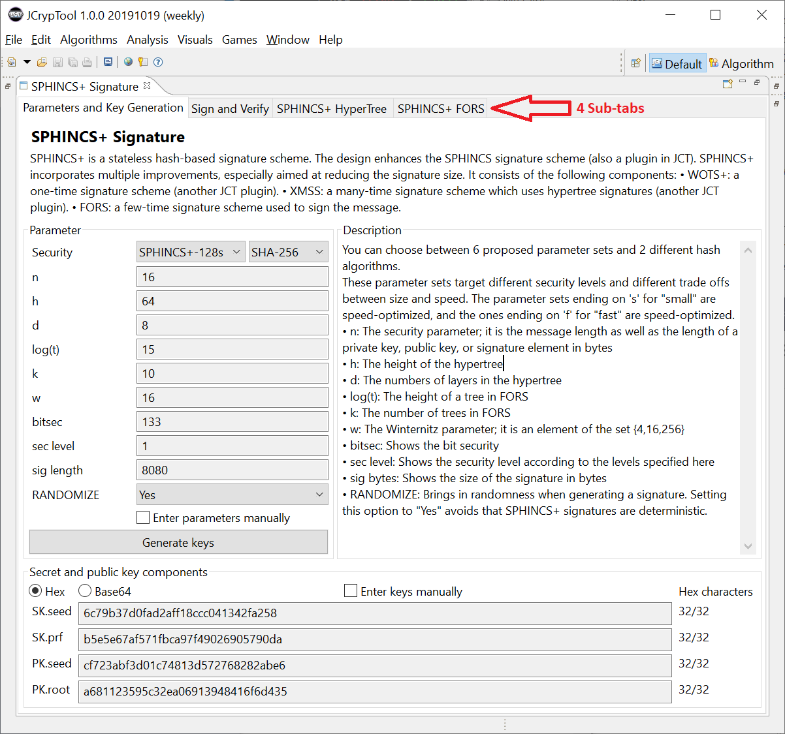
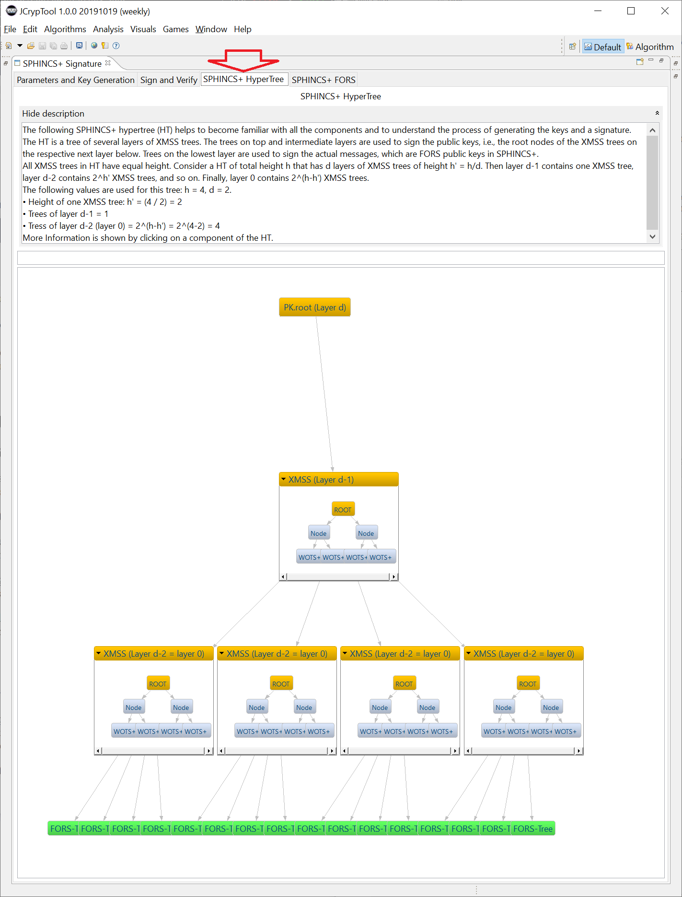
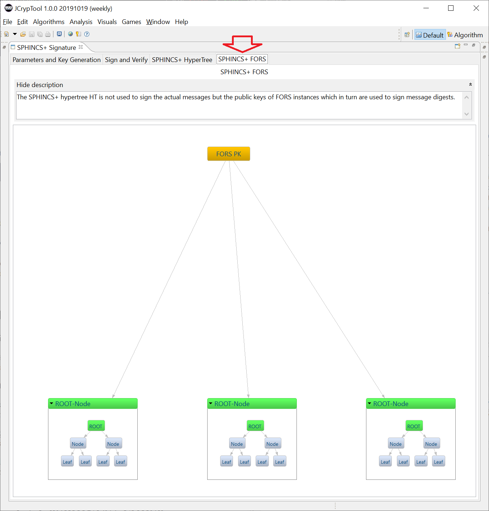

SPHINCS+ is a stateless, hash-based signature method that is considered to be quantum computer resistant. As of June 2019, it is in the category "Digital Signature Algorithm" in the 2nd round of the NIST Competition Post-Quantum Cryptography.
The JCT online help about SPHINCS+ is divided into three parts:
Remark: Besides the newer scheme SPHINCS+, JCT also contains the older PQC scheme SPHINCS
.
The plugin can be opened via the main menu entry "Visualization" and the menu item "SPHINCS+ signature". Then a tab "SPHINCS+ signature" appears, which has 4 sub-tabs. Their names are:
Below, the content of the 4 sub-tabs is described.
In the 1st sub-tab you can see and adjust the used parameters and then generate the keys which will then be used for signing and verifying in the second sub-tab.
The following screenshot shows the default settings and the keys generated randomly by pressing the button "Generate keys". You can also input your own keys to test examples from the literature.
In the first sub-tab you can modify and view the following parameters of the procedure. The parameters are displayed in the decimal system (base 10).
| Parameter | Description |
| Security | This parameter defines the parameter set for the
following parameters. The naming scheme of the parameter sets is: SPHINCS+ security level {s, f}. The desired security level can take the following values: 128, 192, 256 bit. The last part of the naming scheme {s, f} returns whether the method should be optimized for speed (f = fast) or size of the signature (s = size). The parameter sets were chosen in the standard in a way that a reasonable relationship between speed and signature size is present. In the second combo box you choose which hash method is used. |
| n | The security parameter of the procedure. The signature length is a multiple of n. The parameter n defines the output length of all used cryptographic functions except Hmsg. |
| h | The parameter h indicates the height of the hypertree, and
thus the number of FORS instances. The bigger the parameter h is the more unlikely it is that a FORS key pair is used several times. The process is more secure, but thus the height of the hypertree and thus the signature length grows. |
| d | The parameter d can be used to influence the speed of the process.
d defines the number of levels in the
XMSS trees in the hypertree. As a result, parameter d must divide
parameter h. The larger d is, the smaller are the subtrees and the faster the signing works. However, d also defines the number of WOTS+ signatures in a hypertree, and also in the resulting signature. |
| log (t) or a | The parameter a is calculated by the logarithm dualis
of t. t defines the number of leaves in one FORS tree and must be a multiple of 2. A smaller t leads to smaller and faster signatures, but given a predefined security level it involves a larger parameter k. |
| k | The k parameter is related to the t parameter. These 2 parameters define the speed and security of FORS. |
| w | The Winternitz parameter w defines the number and length
of the hash chains per WOTS+ instance. A bigger value leads to a linearly longer length of the chains, but to a logarithmically reduced number of them. A large value w leads to shorter signatures, however, this will be at the expense of speed (exponentially). |
| bitsec | bitsec is the pre-calculated security of the used parameters. |
| sec level | The security level of the parameters used. |
| sig length | Length of a signature in bytes. |
| RANDOMIZE | RANDOMIZE sets a random value as seed for the pseudorandom permutation, which is used during the generation of the SPHINCS+ signature. |
| Checkbox "Enter parameters manually" | If this checkbox is activated, parameters can be set outside the predefined parameter sets. However, then the fields "bitsec", "sec level" and "sig length" are disabled because these values can heavily differ. |
| Button "Generate keys" | Pushing this button, a SPHINCS+ key pair is generated. The key pair is displayed in the grouping below."Enter parameters manually" |
The display of the keys can be switched between "Hex" (hexadecimal) and "Base64" with two radiobuttons.
Enabling the checkbox "Enter keys manually" the seed can entered
manually. This allows signatures to be reproduced.
Enabling this checkbox also changes the title of the button
"Generate keys" to "Set keys".
The secret key consists of four parts each n bytes long (so each is 2*n hex characters long). In the graphical user interface, these parts are displayed separately. The abbreviation "SK" stands for "secret key" (private key) and "PK" for "public key".
| Component | Usage |
| SK.seed | The initialization vector SK.seed is used to create all secret keys of WOTS+ and FORS. It is the secret key of the hypertree. |
| SK.prf | The secret key SK.prf is used to calculate the random value for the message hash. |
| PK.seed | PK.seed is a random value. |
| PK.root | PK.root is the public key of the hypertree. |
In the 2nd sub-tab, you can enter a message (or keep the default) and then sign it with SPHINCS+ (prerequisite is, that keys have been created in advance in the 1st sub-tab). Afterwards you can verify the signature.
As long as you don't change anything, the verification will always succeed (ok). But if you change the message and click again the button "Verify signature", the verification will fail.
Currently the signature values cannot be changed in this sub-tab. If you generate again new keys in the first sub-tab, they will be used here not until you sign the message again.
Here you can enter the message, which should be signed.
You can use the "Sign message" button to sign your message. This button only works, if keys have been generated before in the sub-tab "Parameters and Key Generation".
You can verify a signature using the button "Verify signature". If no signature was generated yet, you get an error message.
Normally, the verification is always ok. To force an error after the signature generation, you can change the used message. Then it doesn't fit any more to the generated signature.
If you push several times on the button "Sign message", you'll notice, that always a new signature is calculated. This signature each time has a different value, as the random value R is different.
The status rectangle on the right of the two buttons shows the current status.
With this button you can choose between the hexadecimal and the base64 representation.
A SPHINCS+ signature consists of 3 parts each displayed separately in the graphical user interface.
These values are the random value "R", the signature part generated by FORS, and the signature part generated from the hypertree.
In this sub-tab a typical hypertree and its elements are graphically displayed.
The sub-tabs 3 and 4 can be opened independently of the key generation in the 1st sub-tab. So the hypertree has a fixed size and isn't (yet) generated dynamically from the parameters in the 1st sub-tab.
In the upper section is a description and a dynamic text field. The dynamic text field shows information for the element in the graphical representation which you click at via mouse.
The graphical representation shows a tree in which every node (except the root) represents a tree again. The XMSS trees are displayed as an orange, fold-out box. The root node (public key) of each XMSS tree is used as the node of the hypertree.
The leaves of hypertree are FORS trees. Clicking on a FORS tree let's you jump one sub-tab forward to the fourth sub-tab in this plugin.
The public key of the FORS tree is used as a leaf in the hypertree. The FORS tree again consists of subtrees. These subtrees are displayed as a drop-down item. There, the root and the container element are marked in green – they represent the same element.
